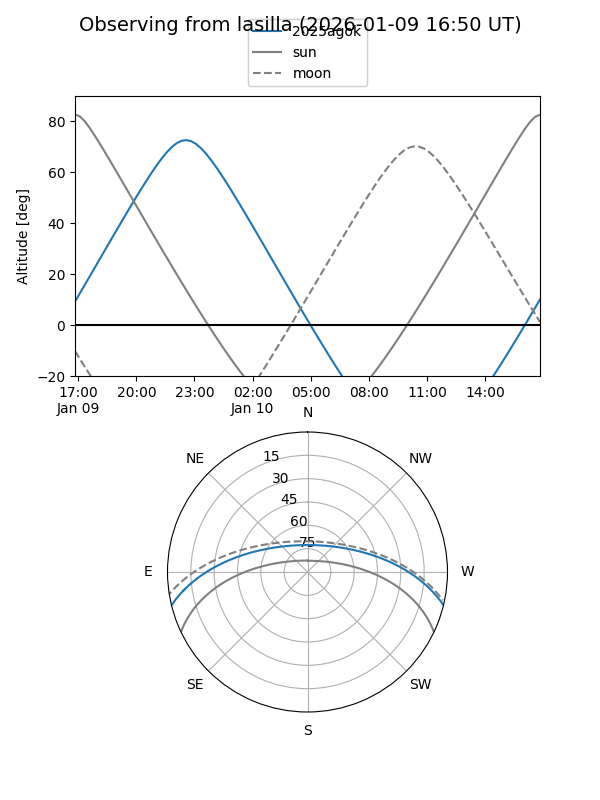
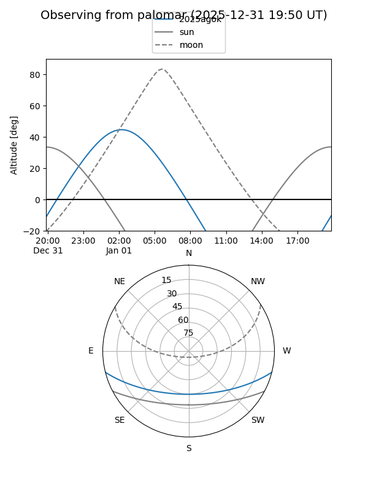
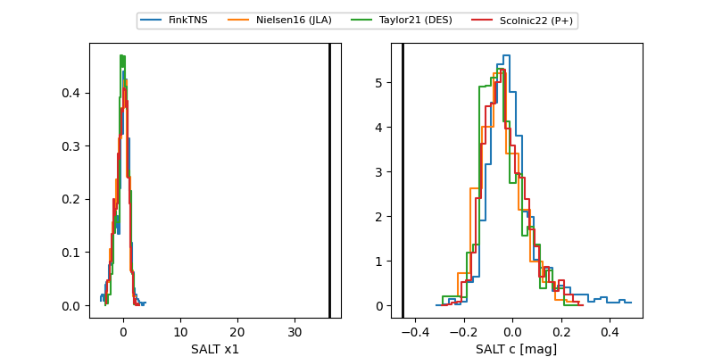

2025agok
Target 2025agok at 2025-12-31 18:00
Aliases and brokers:
FINK: link
Lasair: link
ALeRCE: link
TNS: link
YSE: link
alt names
ZTF25acguxin (ztf,fink_ztf)
2025agok (tns,yse)
Coordinates:
equatorial (ra, dec) = 16.7242,-12.06978
equatorial (HMS+DMS) = 01:06:53.81,-12:04:11.22
galactic (l, b) = (137.2207,-74.51107)
Flags:
Photometry:
last ztfg=20.18
1 ztfg detections
Lightcurve

Visibility


Additional plots
